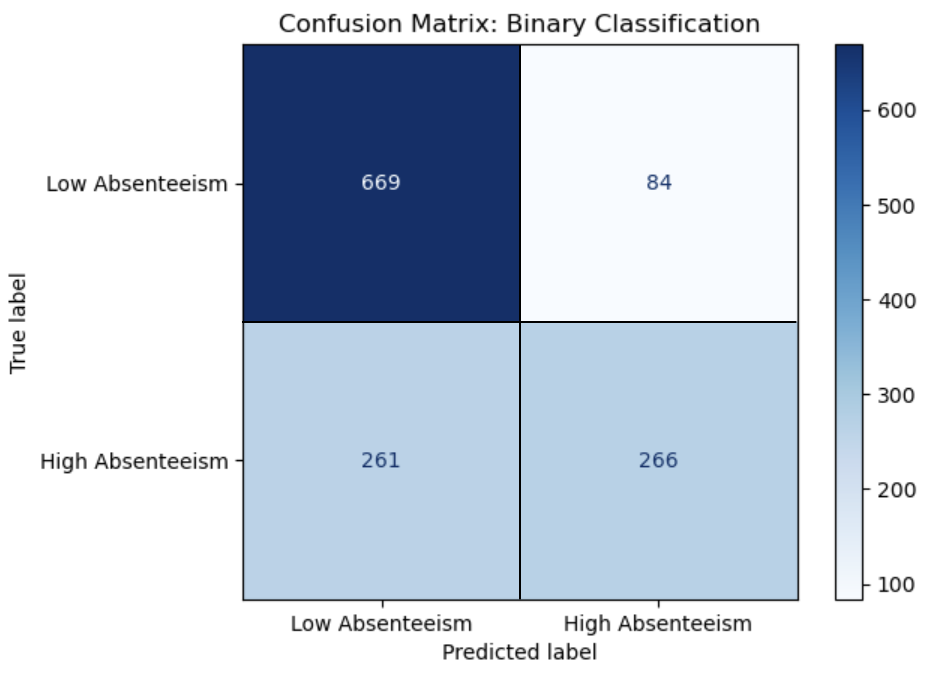
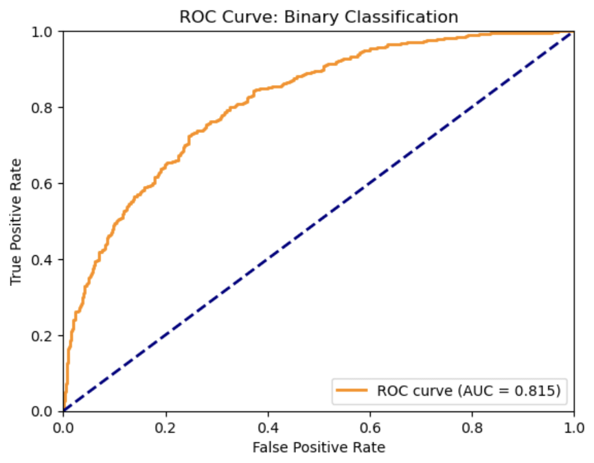
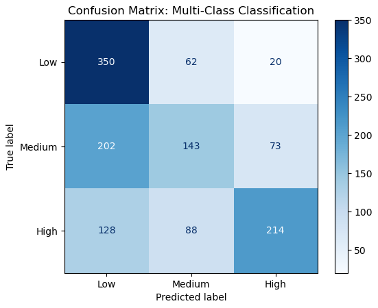
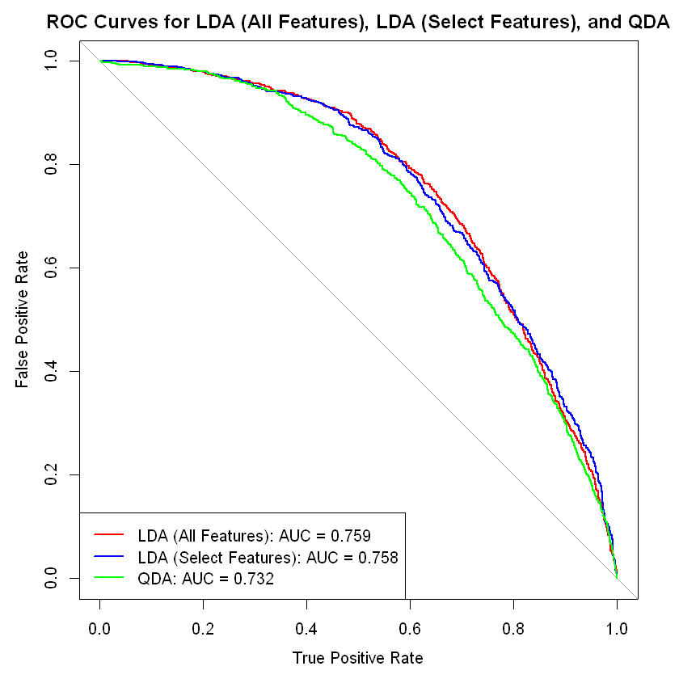
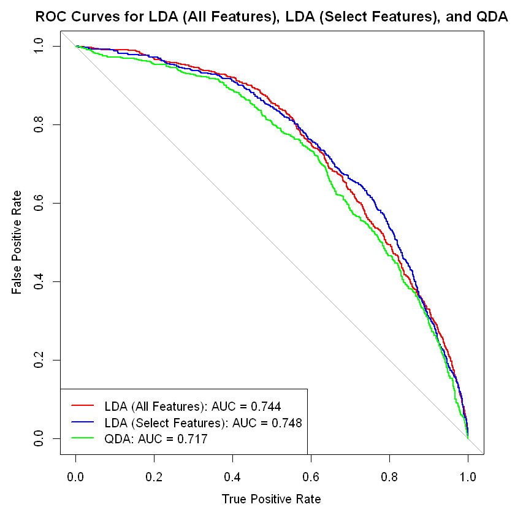
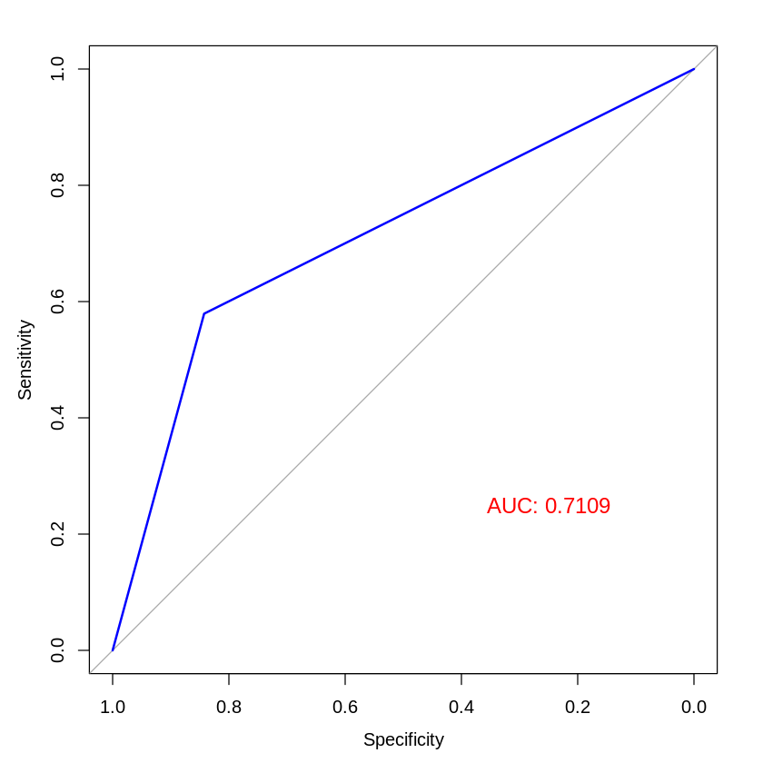
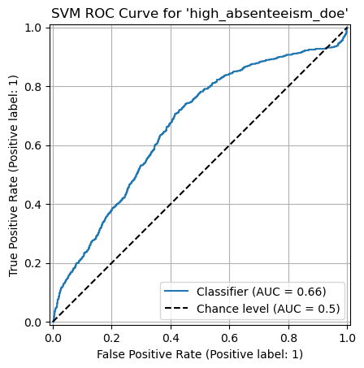
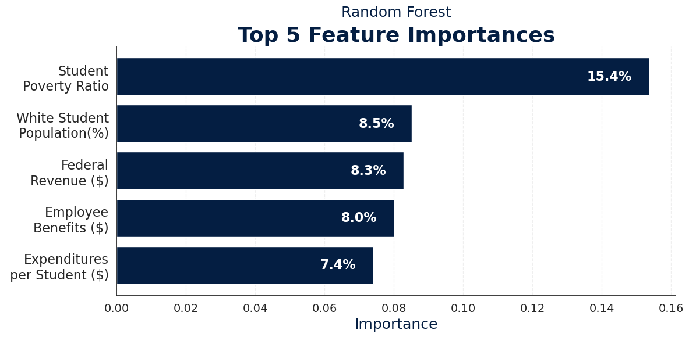
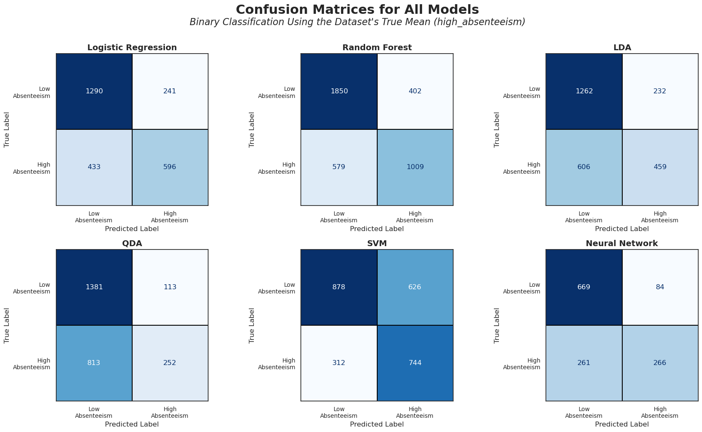

Results
The following table presents the key performance metrics of the machine learning models used in this study. This comparison provides valuable insights into model effectiveness in identifying students with high absenteeism. The remainder of this section will discuss each model in detail.
| Model | Accuracy | AUC | F1 | Precision | Recall |
|---|---|---|---|---|---|
| Logistic Regression | 0.737 | 0.711 | 0.639 | 0.712 | 0.579 |
| Logistic Regression (DOE) | 0.770 | 0.646 | 0.471 | 0.655 | 0.367 |
| Random Forest | 0.745 | 0.728 | 0.673 | 0.715 | 0.635 |
| Random Forest (DOE) | 0.784 | 0.690 | 0.557 | 0.694 | 0.465 |
| LDA | 0.673 | 0.759 | 0.523 | 0.664 | 0.431 |
| LDA (DOE) | 0.735 | 0.744 | 0.395 | 0.597 | 0.295 |
| QDA | 0.638 | 0.732 | 0.352 | 0.690 | 0.237 |
| QDA (DOE) | 0.725 | 0.717 | 0.328 | 0.577 | 0.229 |
| SVM | 0.634 | 0.722 | 0.613 | 0.543 | 0.705 |
| SVM (DOE) | 0.630 | 0.689 | 0.501 | 0.411 | 0.639 |
| Neural Network | 0.731 | 0.815 | 0.607 | 0.760 | 0.5047 |
Neural Network
The binary classification neural network model demonstrated promising results in classifying school districts based on absenteeism levels, with a focus on distinguishing between low and high absenteeism. After training for 33 epochs, the model achieved a final test loss of 0.5342. The model’s hyperparameters were manually tuned through grid search for optimal performance, returning an optimal model with 3 hidden layers each with a hidden layer size of 128 neurons, a dropout rate of 0.3, and the use of the RMSprop optimizer with a learning rate of 0.001. Despite these efforts, the model still exhibits room for improvement, particularly in its recall for identifying high absenteeism districts.
The model’s accuracy, precision, recall, and F1 score can all be derived from the confusion matrix in Figure 8. The accuracy of the model was 0.7305, meaning that 73.05% of all predictions were correct. While this indicates that the model is relatively accurate in its overall predictions, accuracy alone may not fully capture the model’s effectiveness, especially in a project where the classes are imbalanced. Because the majority of districts have low absenteeism, a model that predicts low absenteeism for all districts could achieve a high accuracy score, despite failing to identify high absenteeism cases. The precision of the model was 0.7600, suggesting that when the model predicts a district to have high absenteeism, it is correct 76% of the time. This is a strong result in contexts where false positives are undesirable. In this case, the model is relatively reliable when it signals a district as having high absenteeism. However, the model’s recall was 0.5047, meaning that it correctly identified only 50.47% of the districts with high absenteeism. This indicates that the model misses nearly half of the actual high absenteeism districts, which is a significant shortcoming if the goal is to identify as many high absenteeism cases as possible for timely intervention. The F1 score of the model was 0.6066, reflecting a moderate balance between precision and recall. This score suggests that while the model performs reasonably well in terms of both metrics, there is room for improvement, particularly in increasing recall to capture more of the high absenteeism districts without sacrificing too much precision.
In addition to the accuracy, precision, recall, and F1 score, the model’s performance was also assessed using the Area Under the Receiver Operating Characteristic (AUC-ROC) Curve, which was found to be 0.815, as shown in Figure 1. The AUC provides a measure of the model’s ability to distinguish between the two classes, high and low absenteeism districts in our case. A value of 0.815 indicates that the model has a strong ability to distinguish the two classes, and a high likelihood of ranking a randomly chosen high absenteeism district higher than a randomly chosen low absenteeism district.

high_absenteeism target
high_absenteeism targetWhile the binary classification model displayed a solid performance in predicting absenteeism rates, its ability to identify all high absenteeism districts is limited. Future improvements could focus on enhancing recall, possibly by adjusting the decision threshold or exploring different model architectures, to better detect high absenteeism districts that require intervention.
The multiclass classification neural network model demonstrated modest results in classifying school districts into low, medium, and high absenteeism categories. After training for 18 epochs, the model achieved a final validation loss of 0.9457. After tuning the model’s hyperparameters, the best-performing configuration utilized three hidden layers of 256 neurons each, a dropout rate of 0.3, and the RMSprop optimizer at a learning rate of 0.001.
The model’s accuracy, precision, recall, and F1 score can all be derived from the confusion matrix in Figure 2. In terms of overall performance, the model’s overall accuracy was 0.5523, indicating that 55.23% of the model’s predictions were correct. While this demonstrates some predictive capability, it also highlights challenges posed by class imbalances, where the model may struggle with less dominant absenteeism categories. The model achieved a precision score of 0.5673, suggesting that when it predicts a district’s absenteeism level, it is correct 56.73% of the time. This indicates a moderate ability for the model to avoid false positives. With a recall of 0.5523, the model successfully identified 55.23% of the true absenteeism cases across all classes. This metric highlights the model’s limitations in capturing all relevant instances, particularly with the medium absenteeism bin. Finally, the model’s F1 score of 0.5389 reflects a balance between precision and recall. This metric suggests that while the model is functional, it could benefit from adjustments to better address the complexities of the data.

These results highlight the need for enhancements in feature engineering and possibly exploring alternative model architectures to improve overall multi-class classification performance.
Linear Discriminant Analysis & Quadratic Discriminant Analysis
Two LDA models were trained to predict school districts with higher-than-average chronic absenteeism. Both predicted a binary outcome, high_absenteeism, coded as 1 if a district’s chronic absenteeism rate exceeded 23.6%—the average rate in the dataset. Using a standard 80/20 train-test split and 10-fold cross-validation, the first model was trained on all numerical predictors, yielding an accuracy of 0.676. Sensitivity was 0.845, while specificity was 0.431. The second LDA model used a subset of predictors selected through forward stepwise feature selection aimed at maximizing the Adjusted R-squared value. This process reduced the number of predictors from 15 to 12. Using the same train-test split and cross-validation approach, the second model achieved an accuracy of 0.674. However, its sensitivity decreased slightly to 0.834, while its specificity increased to 0.464. Based on the confusion matrices of both models, it is evident that while they are effective at identifying districts with lower chronic absenteeism, they underperform in accurately predicting districts with high absenteeism.
The QDA model was trained using all numeric predictors with the intent to predict the binary high absenteeism variable. The same 80/20 train-test split and 10-fold cross-validation applied to the LDA models was applied here, yielding an accuracy of 63.8%. This model has a high sensitivity of 0.924 while having a very low specificity of 0.237. This shows that the QDA model performs poorly when predicting high absenteeism schools, but it does better predict lower absenteeism schools. Overall, the QDA model performs worse than both LDA models, suggesting that it overfits the training data. When comparing all the models, their relative AUC performance when leveraging a ROC plot is seen in Figure 3.

high_absenteeism targetWhen basing predictions on the Department of Education’s average chronic absenteeism statistic (28%) the models improved. The first LDA model, once again using all features as well as the same train-test split and cross-validation technique, achieved an accuracy of 73.5%. Its sensitivity was .918 while its specificity was 0.295. The feature-selection LDA model achieved an accuracy of 72.9%. Its sensitivity and specificity were similar to the first, being 0.919 and 0.269 respectively. Finally, the QDA model resulted in an accuracy of 72.5%, having a slightly higher specificity at 0.930 and a lower specificity at 0.229. Figure 4 compares their relative performance based on AUC.

high_absenteeism_doe targetThe remaining models were less successful in predicting the multi-class classification variable. The first LDA model, which used all numeric variables with an 80/20 train-test split and 10-fold cross-validation, achieved an accuracy of 50.9%. It struggled particularly with identifying medium-risk school districts while performing better at predicting low-risk and high-risk districts. The second LDA model, using the same data split and cross-validation strategy but restricted to 12 numeric predictors selected to maximize the Adjusted R-squared value, produced similar results. Its accuracy was 49%, and it also underperformed in classifying medium-risk districts. Lastly, the QDA model, trained with the same approach, performed the worst, with an accuracy of 44%. The confusion matrix indicated that predictions were heavily biased toward the low-risk category, resulting in the misclassification of most medium- and high-risk schools.
Logistic Regression
Initially, the team fit logistic regression models to predict high absenteeism, using both the self-defined and DOE-defined thresholds. In both cases, the original models showed moderate accuracy but relatively low sensitivity, particularly when predicting the positive (high absenteeism) class. To address skewness and potential non-linearity in key predictors, a log transformation was applied to highly right-skewed variables, which included all of our feature variables. After log-transforming these predictors, model performance improved across both thresholds.
For the self-defined absenteeism threshold, the logistic regression model’s test set accuracy increased from 69.2% to 71.4%, and the AUC improved from 0.72 to 0.76, indicating stronger overall discrimination between high and low absenteeism districts. Sensitivity increased from 45.7% to 53.2%, with only a minor reduction in specificity, suggesting better identification of schools with high absenteeism without sacrificing much in the way of correctly identifying low-absenteeism schools. Similarly, for the DOE-defined threshold, the log-transformed model achieved a test set accuracy of 77.6% (compared to 75.4% pre-transformation) and an AUC improvement from 0.70 to 0.73. Sensitivity rose slightly from 29.0% to 34.5%, while specificity remained high at over 90%, indicating that the model continued to effectively screen out schools not at high risk while modestly improving its ability to detect true high-absenteeism cases.

high_absenteeism_doe targetIn both cases, there was an indication of potential issues with complete or quasi-complete separation among the predictors for certain observations. This appeared less extreme after transformation, suggesting improved model stability. Overall, the log transformation meaningfully enhanced model calibration and discrimination, particularly for predictors with heavy-tailed distributions.
Support Vector Machines
Using the self-defined threshold, the SVM model achieved an overall accuracy of 51%. The model demonstrated strong recall for identifying students with high absenteeism (recall = 0.89) but struggled with detecting low absenteeism cases, where recall was only 0.23. The area under the ROC curve (AUC) was 0.6591, suggesting moderate discriminative ability. Despite the relatively high precision for low-absenteeism students (precision = 0.76), the model’s imbalanced sensitivity across classes indicated a tendency to overpredict high absenteeism. When the DOE-defined threshold was used, model performance improved. Accuracy increased to 65%, and the recall for low-absenteeism students rose to 0.70, while the recall for high-absenteeism students was 0.53. The AUC similarly improved to 0.6642. These results indicate that the DOE-defined threshold offered a more balanced classification between the two groups and provided a slight overall performance gain.

high_absenteeism_doe targetAlternative kernels were evaluated to investigate model performance further. When switching to the radial basis function (RBF) kernel, the model’s performance deteriorated substantially. Accuracy dropped to 37%, and the AUC score fell to 0.4464, indicating performance worse than random guessing. The model’s recall for low-absenteeism students was particularly poor at just 0.15, suggesting that the RBF kernel was a poor fit for the data under current tuning parameters. Similarly, the polynomial kernel produced extremely poor results. The confusion matrix indicated that the model misclassified nearly all observations, particularly failing to correctly identify low-absenteeism students.
Finally, hyperparameter tuning on the regularization parameter (C) was performed to assess potential improvements. A grid search across C values showed minimal impact on model performance, with accuracy, recall, and AUC remaining largely unchanged. This suggests that, under the current feature set and without more extensive feature engineering or kernel adjustments, the SVM’s performance is relatively insensitive to the level of regularization.
Random Forests
In the binary classification task (predicting whether a district would exhibit high chronic absenteeism) the Random Forest model achieved an accuracy of 74% and an AUC of 0.728. The model performed better on the majority class (non-high absenteeism), with a precision of 0.76 and recall of 0.82, while it had slightly lower performance on the high absenteeism class (precision: 0.72, recall: 0.64). These results indicate reasonably strong discriminative ability, with a balanced trade-off between precision and recall.
In the multiclass classification (absenteeism levels as low, medium, or high) the model achieved an overall accuracy of 58%. Class-level performance varied: the model performed best on the low and high absenteeism classes, with F1-scores of 0.65 and 0.63 respectively, while performance on the medium category lagged (F1-score: 0.46). This suggests some difficulty in differentiating medium absenteeism from adjacent categories. Across both tasks, the student poverty ratio emerged as the most important feature, highlighting its strong predictive power for chronic absenteeism risk.

Binary Model Confusion Matrices
The following confusion matrices summarize classification performance for each of the six binary models predicting high absenteeism. They highlight each model’s ability to correctly identify both high and low absenteeism districts.

high_absenteeism target.Discussion
Among the models used in this study, neural networks produced the best results, outperforming all others in terms of accuracy and balanced classification metrics. Neural networks excelled at capturing the complex, nonlinear relationships between district characteristics and absenteeism outcomes, although at the cost of interpretability.
Random forests also performed well. They offered high predictive accuracy while maintaining greater interpretability than neural networks. Through random forests, the team extracted meaningful variable importance rankings, which provided insight into which district characteristics most influenced absenteeism rates. Random forests were particularly helpful in handling feature interactions and non-linearities without extensive preprocessing. Logistic regression also performed reasonably well. Despite its simplicity, it provided a solid baseline and was effective for binary classification. However, it struggled to capture the complex, nonlinear relationships in the data, which more flexible models like neural networks and random forests could better address.
LDA and QDA underperformed significantly compared to the more flexible models. These methods, while theoretically suited for normally distributed data, performed poorly due to the violation of their distributional assumptions in our real-world dataset. This limited their ability to effectively model the complexities of chronic absenteeism in school districts. SVMs struggled to achieve high accuracy, especially when faced with the complexity of our data. Additionally, SVMs lacked the interpretability provided by models like random forests, which made understanding their predictions challenging.
A major challenge during this process was dealing with highly correlated features. Initially, the dataset included detailed information on the demographic breakdown of chronic absenteeism by subgroups (e.g., absenteeism rates by race and disability status). However, many of these variables were perfectly correlated with the outcome, effectively leaking the answer into the predictors. Including them would have resulted in artificially inflated performance without yielding meaningful insights. As a result, the team removed these features and focused on broader district-level predictors, such as overall demographic composition and financial characteristics. This experience reinforced the importance of careful feature selection to ensure models are genuinely predictive rather than merely memorizing the outcome.
Conclusion
This study provided important insights into the factors that drive chronic absenteeism across U.S. school districts. Across all models, especially the variable importance outputs from random forests and feature weights of logistic regression, the team found that the student poverty ratio, the percentage of white students, and funding-related variables (such as state and local revenue per pupil) were consistently the most important predictors.
Districts with higher poverty rates tended to experience significantly higher chronic absenteeism, suggesting that broader socioeconomic disadvantages strongly affect school attendance. Similarly, districts with higher shares of white students typically had lower absenteeism rates, though this finding likely reflects deeper structural inequalities rather than direct causal effects. Less surprisingly, funding variables played a major role, as districts with greater financial resources are better positioned to support students and reduce absenteeism.
Ultimately, the results suggest that efforts to address chronic absenteeism should focus not just on in-school policies but also on broader socioeconomic conditions and resource allocation. By identifying poverty and underfunding as key risk factors, our models highlight areas where interventions could be most impactful.